패션디자인산업기사 (2003-03-16 기출문제)
1과목: 피복재료학
1. 다음 염료 중 면섬유에 염착이 가장 불량한 것은?
- 산성 염료
- 직접 염료
- 반응성 염료
- 황화 염료
(정답률: 알수없음)

2. 면양의 종류 중 메리노종에 대한 설명으로 맞는 것은?
- 메리노종은 호주가 원산지이다.
- 메리노종은 남아프리카 산이 제일 양호한 품종이다.
- 메리노종 양모는 카펫등에 주로 사용된다.
- 메리노종은 면양의 종류 중 제일 양호한 품종이다.
(정답률: 알수없음)
3. 폴리에스테르 섬유의 특성으로 가장 적당한 것은?
- 산도가 높으나 알칼리에 약하다.
- 흡습성이 크고, 강도가 크다.
- 염색성이 좋고, 벌키성이 우수하다.
- 탄성이 우수하고, 레질리언스도 좋다.
(정답률: 알수없음)
4. 다음 중 코머사(combed yarn)를 가장 잘 표시한 것은?
- 타면 공정을 거친 후 나온 실
- 소면(carding)공정 후 나온 실
- 단섬유와 넵을 완전히 제거한 실
- 카아드사(carding yarn)이며 넵이나 단섬유가 많이 함유한 실
(정답률: 알수없음)
5. 경사로 사용하는데 적당한 실이 아닌 것은?
- 꼬임이 적은 실
- 꼬임이 많은 실
- 풀먹인 실
- 강도가 높은 실
(정답률: 알수없음)
6. 학생복지,우산감 등에 많이 사용되는 조직은?
- 능직
- 평직
- 벌집짜기
- 수자직
(정답률: 알수없음)
7. 3/3의 6매 사문직에서 씨실쪽으로 씨실 2올을 삭제하여 배열하면 몇도의 완사문직이 되는가?
- 38°
- 20°
- 27°
- 15°
(정답률: 알수없음)
8. 셀로비오스는 면섬유의 기본단위체이다. 알콜기를 몇 개 나 가지고 있는가?
- 8
- 6
- 3
- 2
(정답률: 알수없음)
9. 다음 호료 중 물 이외의 발호제가 필요한 것은?
- 전분
- 카복실메틸셀룰로스
- P.V.A
- 알킬산 소다
(정답률: 알수없음)
10. Fibroin은 pH가 어느 정도에서 상해를 입는가?
- 7 정도
- 12 정도
- 9 정도
- 5 정도
(정답률: 알수없음)
11. 그림에 표시된 조직의 이름은?
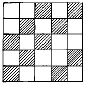
- 21/12평직
- 11/12능직
- 주자직
- 2/3 능직
(정답률: 알수없음)
12. 그림과 같은 구조를 가진 직물은?
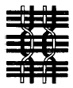
- 능직
- 여직
- 주자직
- 첨모직
(정답률: 알수없음)
13. 셀룰로스 섬유의 분자식은?
- (C6H7O2OH)n
- (-CH2·CH2-)n
- (C6H10O5)n
- (-CH2CH2CONHCH2CH2-)n
(정답률: 알수없음)
14. 다음 중 항중식 번수법을 사용하는 실은?
- 견사(silk)
- 비스코스레이온사(viscose rayon)
- 면사(cotton)
- 폴리에스테르사(polyester)
(정답률: 알수없음)
15. 견사로 직물을 만들 때 견섬유의 특성을 잘 살릴 수 있는 조직은?
- 평직
- 능직
- 수자직
- 이중직
(정답률: 알수없음)
16. 실의 연도(撚度)는 여러 성질에 영향을 미친다. 관련이 가장 없는 것은?
- 직물외관
- 강력
- 압축성
- 신장성 및 광택
(정답률: 알수없음)
17. 용도에 따른 실의 특성이다. 다음 중 편물용에 필요한 것은?
- 실의 강도와 미끄러짐이 좋은 것
- 실의 강도와 내구성이 필요한 것
- 일반적으로 꼬임이 적고 유연한 것
- 일반적으로 꼬임이 많고 강도가 클 것
(정답률: 알수없음)
18. 견섬유에 관한 설명이 아닌 것은?
- 알칼리에 약하다.
- 산성염료에 대한 염색성은 좋다.
- 일광에 의해 심하게 손상된다.
- 생사를 정련하면 피브로인이 제거된다.
(정답률: 알수없음)
19. 다음 섬유 중 공정수분률이 가장 큰 것은?
- 비스코스레이온 (rayon)
- 견(silk)
- 양모(wool)
- 마(hemp)
(정답률: 알수없음)
20. 다음은 편성사(편직사)에 대한 품질관리 항목들이다. 가장 거리가 먼 것은?
- 내열성
- 인장신도
- 굵기의 균일성
- 대전성
(정답률: 알수없음)
2과목: 패션디자인론
21. 스타일화의 개념을 설명하였다. 틀린 것은?
- 기본적인 인체의 프로포션은 정확히 파악해야 한다.
- 의복은 더욱 보기 쉬운 상태로 그리지 않으면 안된다
- 스타일화는 디자인의 발상을 그림으로 옮겨 놓은 예술적 분야이기도 하다.
- 스타일화에는 확실한 목적은 없다.
(정답률: 알수없음)
22. 다음 중 형, 색, 소재 등의 요소들을 이질감 없이 통합하기 위한 원칙으로 색과 색의 배색, 전체와 부분과의 관계, 안정과 변화의 어울림 등의 세부적인 부분들의 상호관계를 일컫는 디자인 원리는?
- 조화
- 규모
- 비례
- 대칭
(정답률: 알수없음)
23. 동일 혹은 유사한 톤으로 배색하여 온화한 느낌을 주는 배색을 무엇이라고 하는가?
- 토우널 배색
- 포까마이유 배색
- 콘트라스트 배색
- 톤온톤 배색
(정답률: 알수없음)
24. 경사 방향으로 주축을 나타낸 위파일(weft pile) 직물이며 이랑(rib)이 있는 직물로 추동용의 캐쥬얼한 재킷, 슬랙스 등에 사용되는 것은?
- 트위드(Tweed)
- 프란넬(Frannel)
- 코드류이(Corduroy)
- 헤링본(Herringbone)
(정답률: 알수없음)
25. 다음 그림은 무슨 문양(페이즐리)에 속하는가?
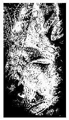
- 식물문양
- 전통문양
- 동물문양
- 기하학문양
(정답률: 알수없음)
26. 비대칭 균형(informal balance)의 성격이 아닌 것은?
- 부드럽고 운동감을 주는 쾌감
- 성숙미
- 규범적이고 안정감
- 세련미
(정답률: 알수없음)
27. 유기적 통일을 가장 잘 설명한 것은?
- 이질적인 성격이지만 서로 극적인 미를 나타낼 수 있어 다이나믹한 분위기를 얻는 효과
- 어울리지 않는 요소들을 조화시키므로 또 다른 미적현상을 만들어 가는 것
- 어느 한 요소를 집중시킴으로서 강조의 포인트로 부각시키고 이것을 중심으로 종속하는 다른 요소를 연관시켜서 이들이 통일성을 이루어 나타나는 조화
- 각 부분과 부분 사이에 무엇인가 연관성을 가지고 전체를 조화시켜 나가는 형식
(정답률: 알수없음)
28. 프린세스 라인의 뉴룩을 비롯하여 H라인, A라인, Y라인 등 1950년대의 알파벳 라인 시대를 장식한 디자이너는?
- 폴 푸아레(Paul Poiret)
- 크리스티앙 디오르(Christian Dior)
- 가브리엘 샤넬(Gabrielle Chanel)
- 이브 생 로랑(Yves Saint Laurent)
(정답률: 알수없음)
29. 다음 중 디자인의 아이디어 개발을 하기 위한 방법이 아닌 것은?
- 관찰하고 스크랩하기
- 수집, 메모하기
- 영화, 미술감상 하기
- 무념에 잠기기
(정답률: 알수없음)
30. 하이웨스트의 절개에서 단을 향하여 완만하게 펄쳐진 라인을 무엇이라고 하는가?
- 아워글라스(Hourglass) 라인
- 슬리머(slimmer)라인
- 엠파이어(empire)라인
- 피트앤플래어(fit and flare)라인
(정답률: 알수없음)
31. 다음 중 체형을 가장 커 보이게 하는 무늬는?
- 명도와 채도가 높으며 바탕색과 대비가 강한 무늬
- 모티프의 크기가 크고 촘촘히 배열된 무늬
- 모티프가 가로로 배열되어 있는 무늬
- 중간 크기의 점무늬
(정답률: 알수없음)
32. 시대별 대표 의상이 잘못 연결된 것은?
- 그리스 - 토가
- 로마 - 스톨라
- 중세 - 튜닉
- 르네상스 - 러프
(정답률: 알수없음)
33. 직물 표면에 나타나는 재질감이 다른 옷감은?
- 오건디(organdy)
- 보일(voile)
- 저지(jersey)
- 시폰(chiffon)
(정답률: 알수없음)
34. 패션 디자인(Fashion Design)은 어느 분야에 속하는가?
- 공간 디자인(Space Design)
- 산업 디자인(Industrial Design)
- 생산 디자인(Product Design)
- 시각 디자인(Visual Design)
(정답률: 알수없음)
35. 스커트를 디자인 할 때 스커트의 폭과 길이를 조화 시키기 위하여 응용할 수 있는 원리는?
- 균형의 원리
- 강조의 원리
- 통일의 원리
- 비례의 원리
(정답률: 알수없음)
36. 색채에 대한 내용을 설명한 것 중 맞는 것은?
- 색채별 의미는 모든 문화권이 같다.
- 물체의 색채는 모든 광원이 다 같다.
- 색채를 지각하게 하는 근원은 염료이다.
- 색채에는 생리적 측면만이 작용한다.
(정답률: 알수없음)
37. 격자 무늬가 가장 어울리지 않는 의복은?
- 이브닝드레스
- 박스쟈켓
- 주름치마
- H 라인 코우트
(정답률: 알수없음)
38. 복식착용의 동기로 볼 수 없는 것은?
- 사냥
- 종교
- 신체보호
- 정숙성
(정답률: 알수없음)
39. 다음 중 위 아래 폭이 비슷해 가장 키가 커보이는 실루엣은?
- 크리놀린 실루엣(crinoline silhouette)
- 버슬 실루엣(bustle silhouette)
- 튜브라 실루엣(tubular silhouette)
- 배럴 실루엣(barrel silhouette)
(정답률: 알수없음)
40. 복식의 여러가지 기능 중 가장 표현적 기능에 속하는 것은?
- 상징적 전달이다.
- 안락감을 증진한다.
- 사회환경으로 부터 보호이다.
- 신체보호이다.
(정답률: 알수없음)
3과목: 의류상품학 및 복식문화사
41. 패션 사이클(fashion cycle) 단계중에서 패션상품의 대량생산, 대량판매가 가능한 시기는?
- 도입기
- 최전성기
- 상승기
- 하강기
(정답률: 알수없음)
42. 어패럴 메이커의 상품기획 업무가 아닌 것은?
- 상품구성 계획
- 타킷마켓 설정
- 생산수량 계획
- 디자인콘셉트 설정
(정답률: 알수없음)
43. 마켓팅리서치(Marketing research)란 무엇인가?
- 시장 개척
- 시장 조사
- 맞춤
- 주문(注文)
(정답률: 알수없음)
44. 광고효과의 수명이 길고 표적시장에 침투하기는 용이한 반면, 신속성이 떨어지는 인쇄 매체는?
- 카탈로그
- 신문
- 직접우편
- 잡지
(정답률: 알수없음)
45. 패션 프로모션의 인적 판매 과정과 관련되는 직접적인 요인이 아닌 것은?
- 잠재고객의 예측 및 파악
- 판매 전 준비
- 판매 제시
- 홍보
(정답률: 알수없음)
46. 다음 중 유행이 사회의 상류 계층에서부터 시작하여 아래 계층으로 전파된다고 설명한 것은?
- 상향 전파이론
- 수평 전파이론
- 하향 전파이론
- 집합 선택이론
(정답률: 알수없음)
47. 광고의 5 대 매체에 해당되지 않는 것은?
- 패션쇼
- 라디오
- 텔레비젼
- 잡지
(정답률: 알수없음)
48. 패션마케팅 활동의 본질이 아닌 것은?
- 적절한 상품
- 적절한 가격
- 적절한 시기
- 적절한 소득
(정답률: 알수없음)
49. 19 세기말 복식의 특징을 잘못 설명한 것은?
- 낭만주의 영향
- S자 실루엣 등장
- 고어드 스커트 등장
- 여성복에 바지 등장
(정답률: 알수없음)
50. 세일즈 지향시대의 마케팅 수단은?
- 컨슈머리즘
- 체인스토어
- 컴퓨터
- 광고
(정답률: 알수없음)
51. 머천다이징 개념을 적용 발전시킨 미국의 백화점 체인 스토어는?
- 버그돌프굳맨(Bergdorf-Goodman)
- 킹쿨렌(King-Kullen)
- 시어스로벅(Sears-Roebuck)
- 로드앤드테일러(Lord and Taylor)
(정답률: 알수없음)
52. 패션 프로모션(fashion promotion)에 해당되지 않는 것은 어느 것인가?
- 판매원에 의한 판매
- 상권조사
- 스페셜 이벤트
- 광고
(정답률: 알수없음)
53. 르네상스 복식의 특징이 아닌 것은?
- 어깨패드(pad)
- 레이스(lace)
- 슬래시(slash)
- 러프 칼라(ruff collar)
(정답률: 알수없음)
54. 고대 그리스인의 의복중에서 (1)도릭 키톤과 (2)이오닉 키톤을 만들 때 사용되었던 소재를 옳게 짝지은 것은?
- (1) 모, (2) 마직물
- (1) 실크, (2) 모
- (1) 실크, (2) 면
- (1) 면, (2) 마직물
(정답률: 알수없음)
55. 비잔틴에서 황제, 황후, 사제, 귀족에 한해서 공식복으로 입었던 의상은?
- 달마티카(dalmatica)
- 팔루다멘툼(paludamentum)
- 튜닉(tunic)
- 팔라(palla)
(정답률: 알수없음)
56. 현대적인 패션산업의 정립기(1965-1969)에 일어난 패션 변화는?
- 강렬한 모더니즘과 전위미술이 패션에도 추구됨
- 영패션이 새시대의 새로운 패션을 구축
- 대담하고 개성적인 뉴룩이 발표됨
- 모던으로부터 클래식으로 디자인의 전환이 진행
(정답률: 알수없음)
57. 현대의 복식변천이 바르게 나열된 것은?
- 플래퍼 스타일- 호블 스커트 - 뉴룩 - 밀리터리 룩
- 밀리터리 룩 - 호블 스커트 - 플래퍼 스타일- 뉴룩
- 플래퍼 스타일- 호블 스커트 - 밀리터리 룩 - 뉴룩
- 호블 스커트 - 플래퍼 스타일 - 밀리터리 룩 - 뉴룩
(정답률: 알수없음)
58. 비잔틴 복식 중 왕족들의 장식띠는 무엇인가?
- 브라코
- 타블리온
- 클라비
- 로룸
(정답률: 알수없음)
59. 다음 중 바로크 시대에 의복 장식을 위해 즐겨 사용되던 대표적인 장식기법은?
- 슬래시(slash)
- 리본(ribbon)
- 패드(pad)
- 후드(hood)
(정답률: 알수없음)
60. 그리스 복식에 대한 설명으로 틀린 것은?
- 옷감을 몸에 두르거나 감싸는 자유로운 형태이다.
- 남녀 모두 키톤을 착용하였다.
- 도릭키톤은 이오닉키톤 보다 드레이프성이 강하다.
- 히마티온은 그리스 복식을 대표하는 의복이다.
(정답률: 알수없음)
4과목: 패턴공학 및 의복구성학
61. 다음 공업용 재봉기(대분류에 의한 재봉기의 분류)가 아닌 것은?
- 본봉(lock stitch) 재봉기
- 블라인드봉(blind stitch) 재봉기
- 이중환봉(double lock stitch) 재봉기
- 단환봉(chain stitch) 재봉기
(정답률: 알수없음)
62. 공정편성 시 편성의 기준이 아닌 것은?
- 설비 수량
- 작업자 수
- 생산 수량
- 생산 공정수
(정답률: 알수없음)
63. 그림과 같이 플레어 스커트를 재단할 때 옆솔기에서 스커트 폭 쪽으로 1/3 위치에서 식서방향을 두었다면, 다음 중에서 옳은 것은?
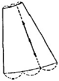
- 플레어가 자연스럽다.
- 옷감의 낭비가 많다.
- 플레어가 중심에 많이 생긴다.
- 양옆솔기에 플레어가 많이 생긴다.
(정답률: 알수없음)
64. 윗실을 바늘귀로 유도하는 한편 윗실의 장력(Tension)을 조절하는 기구는?
- 북집 기구
- 실채기 기구
- 바늘대 기구
- 보내기 기구
(정답률: 알수없음)
65. 봉제 과정에서 천을 침판에 눌러주는 역할을 하는 것은?
- 침판(slide plate)
- 노루발(presser foot)
- 바늘대(needle bar)
- 송치(feed dog)
(정답률: 알수없음)
66. 인체계측 시의 자세로 적절하지 못한 설명은?
- 양발의 뒤꿈치를 붙이고 앞쪽을 30° 정도 벌린다.
- 허리를 자연스럽게 편 다음 머리를 똑바로 하여 눈은 정면을 주시하도록 한다.
- 팔은 자연스럽게 몸통에 붙이고 아래팔을 30° 앞으로 기울인다.
- 착의는 너무 꼭 끼지 않은 내의 정도를 착용한 상태이면 가능하다.
(정답률: 알수없음)
67. 다음 장식봉 중 주름과 관련이 없는 것은?
- 개더 (Gather)
- 파이핑 (Piping)
- 턱킹 (Tucking)
- 스모킹 (Smoking)
(정답률: 알수없음)
68. 다음 중 직접적인 인체계측방법은?
- 실루엣터법
- 석고 포대법
- 모아레법
- 마틴계측법
(정답률: 알수없음)
69. 퍼커링(Puckering) 발생에 영향을 미치는 요인으로 가장 상관이 적은 것은?
- 기계적 요인
- 작업시간에 의한 요인
- 작업자의 봉제 기술적 요인
- 시임구성에 의한 요인
(정답률: 알수없음)
70. 한쪽 방향으로 재단해야 하는 옷감은?
- 가죽
- 공단
- 스판
- 골덴
(정답률: 알수없음)
71. 다음의 제도 기호는?
- 늘림 표시
- 안단선
- 선의 교차
- 곬
(정답률: 알수없음)
72. 사각형 모양의 얼굴에 맞지 않는 neck-line은?
- boat neck-line
- square neck-line
- high neck-line
- round neck-line
(정답률: 알수없음)
73. 다음은 인체의 각 부위별 명칭 및 계측방법이다. 올바른 설명이 아닌 것은?
- 등길이: 뒷목점에서 허리선까지의 길이
- 소매길이: 팔꿈치를 자연스럽게 구부리고 어깨끝점에서 손목점까지의 길이
- 엉덩이 길이: 옆 허리선에서 엉덩이 아래선까지의 길이
- 슬랙스 길이: 옆 허리선에서 발목 복숭아뼈까지의 길이
(정답률: 알수없음)
74. 장촌식 의복원형제도법의 설명으로 맞지 않는 것은?
- 기준이 되는 큰 치수 몇 항목만을 재어 사용한다.
- 계측이 서투른 초보자에게도 적당하다.
- 쉽게 이해되며 제도되는 방법이다.
- 개개인의 신체특징에 맞게 구성된다.
(정답률: 알수없음)
75. 솔기 처리 중 바느질 강도가 가장 높은 것은?
- 뉜솔
- 가름솔
- 통솔
- 쌈솔
(정답률: 알수없음)
76. 다음 중 돌만 슬리브는?
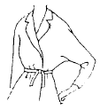
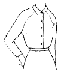
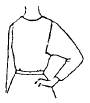
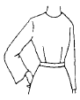
(정답률: 알수없음)
77. 두매 이상의 소재가 서로 포개거나 겹쳐진 상태에서 겹쳐진 부분에 스티치를 1줄 또는 여러 줄 봉제하는 시임(seam)은?
- LS (Lapped Seams)
- FS (Flat Seams)
- BS (Bound Seams)
- SS (Superimposed Seams)
(정답률: 알수없음)
78. 바지 착용시 무릎부분의 솔기가 비뚫어질 때 패턴의 보정방법은?
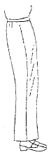
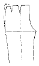
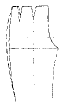
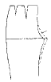
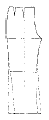
(정답률: 알수없음)
79. 150cm 폭의 옷감으로 타이트 스커트를 만들 경우 옷감의 필요량 계산이 옳은 것은?
- 스커트길이 + 시접(6∼8cm)
- (스커트길이× 2) + 시접(12∼16cm)
- (스커트길이× 1.5) + 시접(6∼8cm)
- 〔스커트길이 + 시접(6∼8cm)〕× 2
(정답률: 알수없음)
80. 생산관리 중 공정시간 분석의 목적이 아닌 것은?
- 기계의 Lay-Out
- 생산목표 관리
- 원가관리 및 임금계산
- 재봉기 가동성능 측정
(정답률: 알수없음)